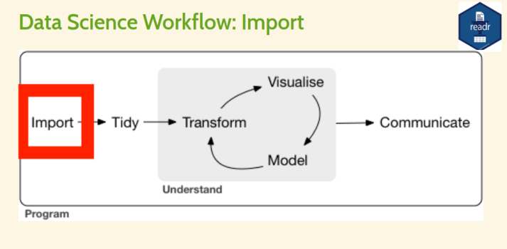

15_08_tutorial
Today's menu
• Data import
◇ Data export
In practical world, we have to
Data import with readr
readr
: part of the core tidyverse.
readr
data import functions
•
read_csv: reads comma-delimited files.
•
read_csv2: reads semicolon-separated files
•
read_tsv: reads tab-delimited files
in this tutorial it is talk about only read_csv. remining are same same as it.
Import data from a .csv file (local machine)
Syntax
datasetname <- read_csv("include_file_path")
When you run
read_csv
, it prints out the names and type of each
column.
Switch to R
getwd()
library(readr)
#this method for current working directory file importing.
student <- read_csv("student_csv.csv") View(student)
"/home/codummy/Desktop/GoogleRCourse"
#directory should be seperated by '/'.
#following method used for reading for any directory in your pc.
student_csv_desktop_r <-
read_csv("/home/codummy/Desktop/GoogleRCourse/student_csv.csv")
View(student_csv_desktop_r)
url <- "https://thiyanga.netlify.app/project/datasets/foodlabel.csv"
foodlabel <- read_csv(url)
View(foodlabel)
### creating csv data set and importing to RStudio.
#part 1
# go to excel > create a dataset > save as csv file. >
# then import to the current working dirctory.
library(tidyverse)
#If the file is saved inside the project folder:
covid_dataset <- read_csv("coviddataset.csv")
covid_dataset
library(magrittr) # to use pipe operator. %>%
covid_dataset %>%
View()
covid_dataset %>%
summary()
summary(covid_dataset) # same as above without pipe operator.
library(ggplot2)
qplot(data=covid_dataset, x=test_result, geom = "bar")
table(covid_dataset$test_result)
Importing csv file from a website
Syntax
datasetname <- read_csv("include url here")
url <- "https://thiyanga.netlify.app/project/datasets/foodlabel.csv"
foodlabel <- read_csv(url)
head(foodlabel, 1)
Example
# A tibble: 1 x 80
Gender Age Education Employment Income Housesize children marital fshopper
<dbl> <dbl> <dbl> <dbl> <dbl> <dbl> <dbl> <dbl> <dbl>
1 1 22 5 4 3 5 2 0 0
# … with 71 more variables: mplanner <dbl>, place <dbl>, FA <dbl>,
read.csv and read_csv• read.csv is in base R.
• read_csv is in tidyverse.
• read.csv() performs a similar job to read_csv().
• read_csv() works well with other parts of the tidyverse.
• read_csv() is faster than read.csv().
• read_csv() will always read variables containing text as character variable.
In contrast, the base R function read.csv() will, by default, convert any character
variable to a factor.
This behavior can be controlled using the
stringsAsFactors argument.
If set to
FALSE, it will read text variables as characters instead of factors.
covid_dataset <- read.csv("path/to/your/file.csv", stringsAsFactors = FALSE)
Writing data to a .csv file
• We can save tibble (or dataframe) to a csv file, using write_csv().
• write_csv() is in the readr package.
Syntax
write_csv(name_of_the_data_set_you_want_to_save, "path_to_write_to")
Example
data(iris)
# This will save inside your project folder
write_csv(iris, "iris.csv")
# This will save inside the data folder which is inside your project folder
write_csv(iris, "data/iris.csv")
Importing data from .xlsx files
Syntax
library(readxl)
mydata <- read_xlsx("file_path")
otherwise you can right click on the excel file under the files tab.
then choose import excel file and copy code and run it. :)
Importing SAS, SPSS and STATA files
SAS
read_sas("mtcars.sas7bdat")
write_sas(mtcars, "mtcars.sas7bdat")
SPSS
read_sav("mtcars.sav")
write_sav(mtcars, "mtcars.sav")
Stata
read_dta("mtcars.dta")
write_dta(mtcars, "mtcars.dta")
Importing other types of data
•
feather: for sharing with Python and other languages
•
httr: for web apis
•
jsonlite: for JSON
•
rvest: for web scraping
•
xml2: for XML
Working with feather, httr, jsonlite, rvest and xml2 is
beyond the scope of the course.